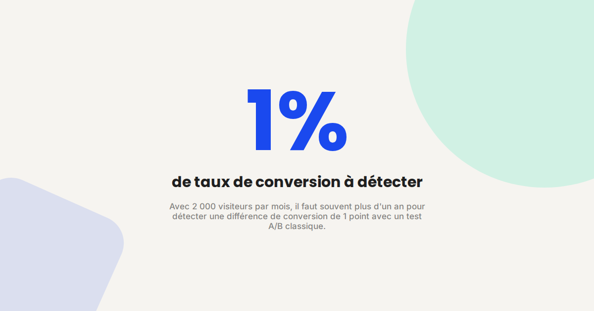
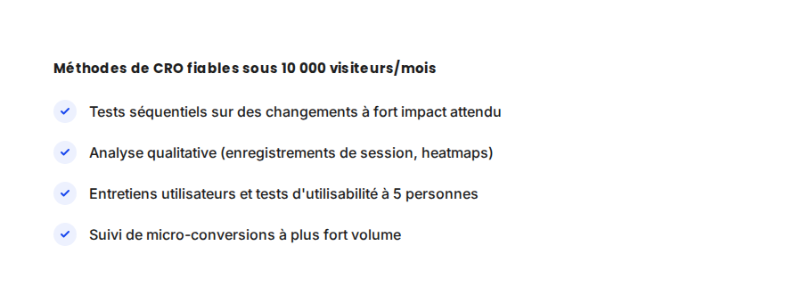

CRO sur petit trafic : les tests qui marchent sans 10 000 visiteurs par mois
La plupart des guides de CRO supposent un trafic que la majorité des sites n'ont pas. En dessous de 10 000 visiteurs mensuels, un test A/B classique n'atteint jamais la significativité statistique avant plusieurs mois. Ça ne veut pas dire qu'il faut renoncer au CRO — ça veut dire changer de méthode.

Dans une bonne partie des missions CRO que je mène pour des TPE/PME, la première chose à corriger n'est pas la landing page — c'est la méthode de test elle-même. Lancer un test A/B classique avec 2 000 visiteurs mensuels, c'est souvent attendre un an pour un résultat qui ne sera même pas fiable statistiquement.
Ce qui ne change pas
Le principe de base du CRO reste identique quel que soit le volume : observer, formuler une hypothèse précise, tester, mesurer. Ce qui change, ce n'est pas la logique, c'est l'outil. Un audit d'optimisation de landing page commence toujours par la même question : où, précisément, les visiteurs abandonnent-ils ? Cette question reste valable avec 500 ou 50 000 visiteurs.
Ce qui change vraiment sur petit trafic
- Le test A/B classique devient statistiquement inadapté. En dessous d'un certain volume, la durée nécessaire pour détecter un effet réel dépasse largement l'horizon business raisonnable — le test tourne, mais le résultat n'est pas exploitable avant longtemps.
- Le qualitatif devient le levier principal, pas un complément. Les enregistrements de session et les heatmaps ne demandent pas de volume statistique : 50 sessions observées attentivement révèlent souvent un point de friction évident qu'aucun test A/B n'aurait détecté plus vite.
- Les micro-conversions offrent plus de volume à analyser. Plutôt que de tester uniquement sur l'achat final, suivre des étapes intermédiaires à plus fort volume (clic sur un CTA, temps passé sur une section) donne des signaux exploitables plus vite.
- Les tests séquentiels remplacent les tests simultanés. Au lieu de diviser un petit trafic en deux groupes (ce qui divise encore le volume disponible par variante), tester une version après l'autre sur des périodes comparables permet de concentrer tout le trafic sur chaque variante testée.

Un exemple qui illustre bien la différence
Sur un client B2B avec environ 1 500 visiteurs mensuels sur sa page de contact, un test A/B classique aurait pris plus de huit mois pour être concluant. À la place, l'analyse de 40 enregistrements de session a suffi à repérer que le formulaire demandait un numéro de téléphone obligatoire — un point de friction visible en quelques sessions seulement. Le retrait de ce champ obligatoire a fait passer le taux de complétion de 31 % à 52 % en trois semaines, sans qu'aucun test statistique n'ait été nécessaire pour valider la décision.
Ce qu'il faut faire concrètement
- Priorisez les changements à fort impact attendu (suppression de friction évidente, clarté de l'offre) plutôt que les micro-optimisations (couleur de bouton) qui demandent, elles, un vrai volume pour être validées statistiquement.
- Regardez au moins 30 à 40 sessions enregistrées avant de formuler une hypothèse de test — c'est souvent suffisant pour repérer un schéma répété de friction.
- Testez en séquentiel, pas en simultané, sur des périodes comparables (même durée, éviter de comparer un mois normal à une période de soldes).
- Suivez des micro-conversions à plus fort volume en complément de l'objectif final, pour avoir un signal plus rapide même si l'objectif final reste rare.
FAQ
Combien de trafic faut-il pour un test A/B fiable ?
Cela dépend du taux de conversion de base et de l'effet attendu, mais en règle générale, en dessous de 10 000 visiteurs mensuels sur la page testée, un test A/B classique devient difficile à conclure dans un délai raisonnable.
Les heatmaps et enregistrements de session sont-ils fiables avec peu de trafic ?
Oui, contrairement aux tests A/B, l'analyse qualitative ne dépend pas d'un seuil statistique : même quelques dizaines de sessions bien observées peuvent révéler un point de friction clair.
Faut-il renoncer aux tests A/B définitivement sur petit trafic ?
Non, mais il faut les réserver aux hypothèses à fort impact attendu, où même un effet important reste détectable plus rapidement, plutôt qu'à des optimisations marginales.
Envie d'optimiser vos conversions sans attendre un an ?
Pour aller plus loin, voir la page CRO, la page Optimisation de landing page, et la page A/B testing faible trafic.
Pour continuer sur ce sujet.